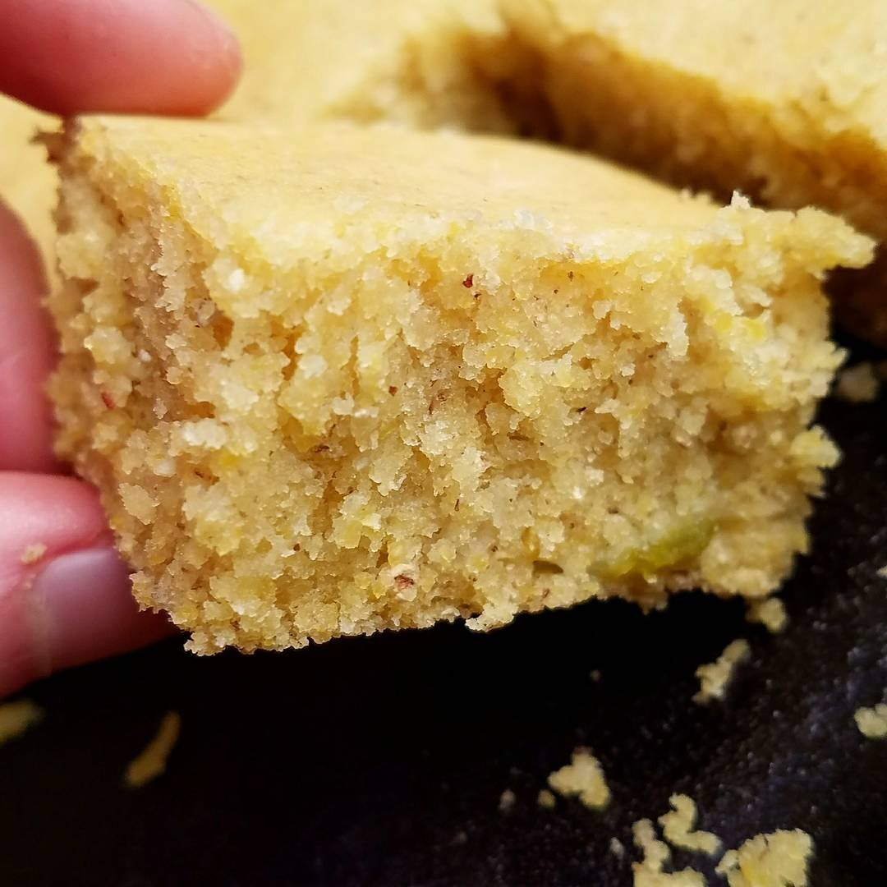
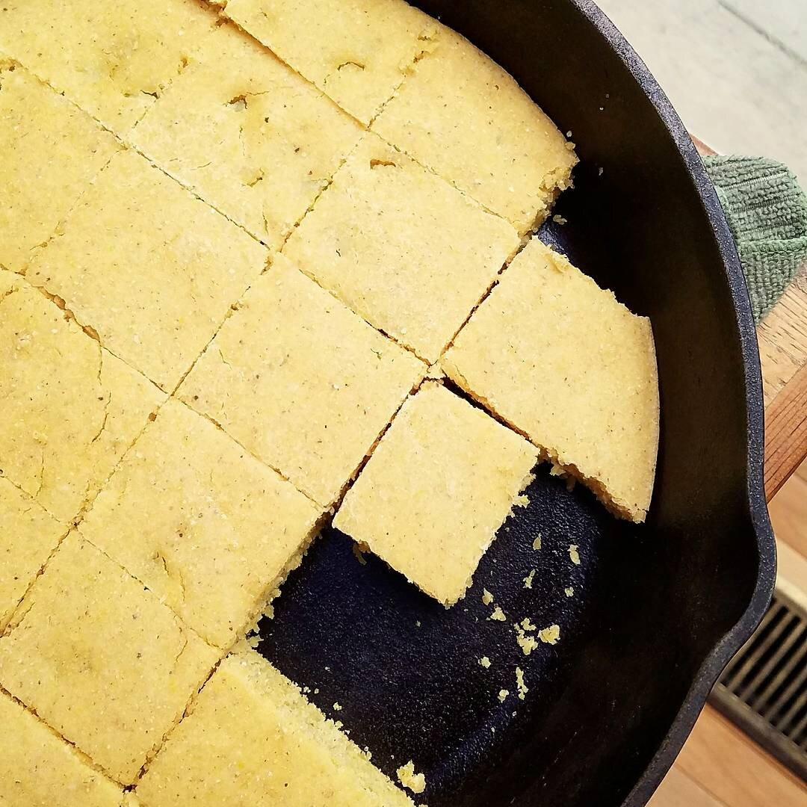
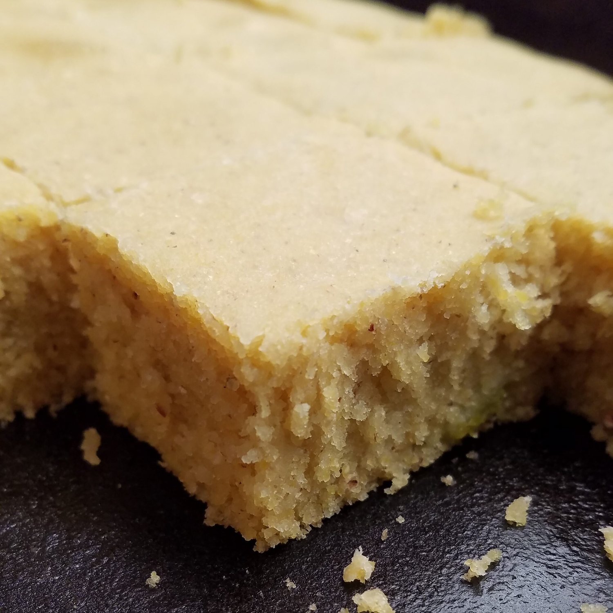

Vegan Green Chile Cornbread (gf)



Ain't nothin' quite like some southern comfort food. This vegan green chile cornbread fills you with happiness and warmth. Perfect for an event or get together, this recipe is dairy free, simple to make, and can be made gluten free!
Memorial Day weekend just happened! We don't do anything huge and celebratory in my family, but we do get together, grill, and just hangout. It's relaxed fun in the sun. This year was a bit different though than the usual going to my mom's house and laying by the pool. Last week, I moved in with Nick :) so our mommies came over to hangout while we grilled. I showed off the place to my mom because it looks drastically different from when she helped me move in the week before. Nick and I hustled (I put him through hell, whoops, love you) to unpack all the boxes and organize everything because I just cannot function with boxes and clutter. But now I'm all settled and feeling good!
We had wayyyyy too much food for memorial day. I made this AMAZING vegan cornbread (really just an excuse for me to eat half of it myself) and Nick grilled up a bunch of veggies for me. He did burgers & wings for everyone else and a vegan patty for me. We also had vegan creamy onion dip my mom makes (it's heaven), guac, veggies, chips, baked beans, roasted potatoes....So much goodness. My favorite was definitely this cornbread though. I baked it in the skillet that Nick had, but it can be made in a regular baking dish as well!
This was absolutely simple to make, and so surprisingly delicious. It's got a moist butter-y center, it's light and fluffy, and it's just so comforting. I love the bits of green chiles sprinkled throughout to give it a subtle kick. You could choose to use jalepenos instead, but I have a personal vendetta with jalepenos and much prefer the green chiles.
Try this out and let me know what you think. :) It'd be great for a group event; it's a sure crowd-pleaser!
Vegan Green Chile Cornbread
Makes: 16 pieces
-
2 cups almond milk
-
2 tsp lemon juice
-
2.25 cups fine ground cornmeal
-
1.25 cups all-purpose flour (use gluten free, if needed)
-
2 tsp baking powder
-
1.5 tsp sea salt
-
1/3 cup melted vegan butter
-
1/4 cup sugar
-
1, 4 oz can of diced green chiles (drained and patted dry)
-
Preheat the oven to 350 F.
-
Combine the almond milk and lemon juice in a medium mixing bowl and whisk together. Set to the side.
-
In a second medium-sized bowl, combine the dry ingredients (cornmeal, all-purpose flour, baking powder, and salt) and stir until well combined.
-
In a small bowl, whisk together the melted butter and sugar. Pour into the almond milk mixture and whisk vigorously for 2-3 minutes.
-
While stirring, slowly add the dry ingredients to the wet ingredients bowl. Mix until well combined. Fold in the diced green chiles.
-
Pour the batter into a well-greased 12 inch skillet or a 9x13 baking dish.
-
Bake at 350 degrees for approximately 28-33 minutes.
-
Remove from the oven and top with a couple dabs of vegan butter (optional). Let cool for 10-15 minutes. Slice and serve!